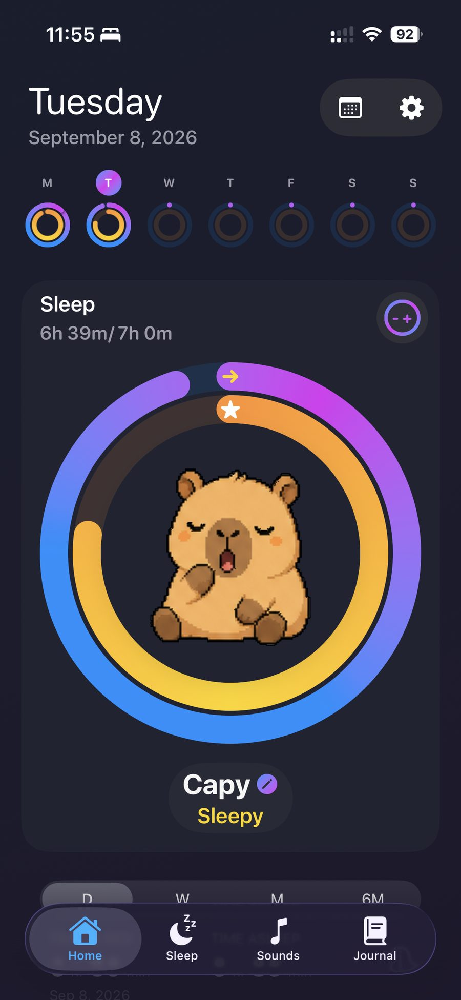
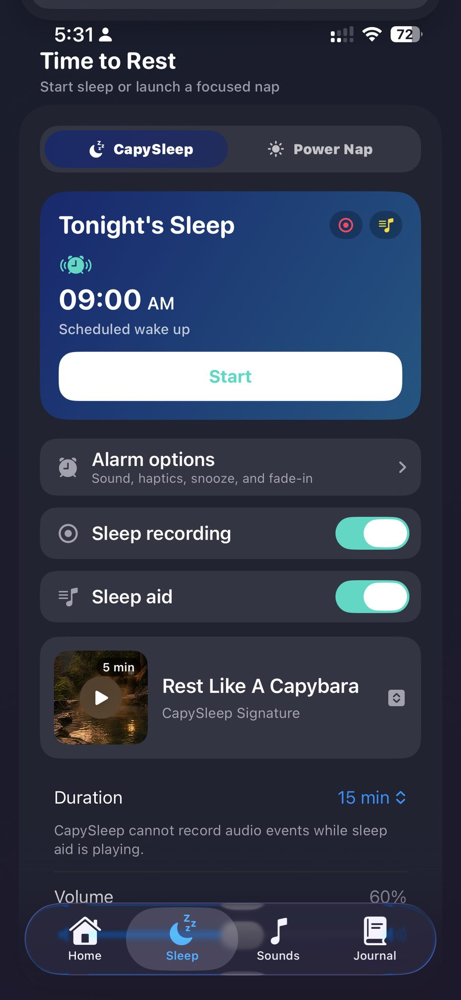
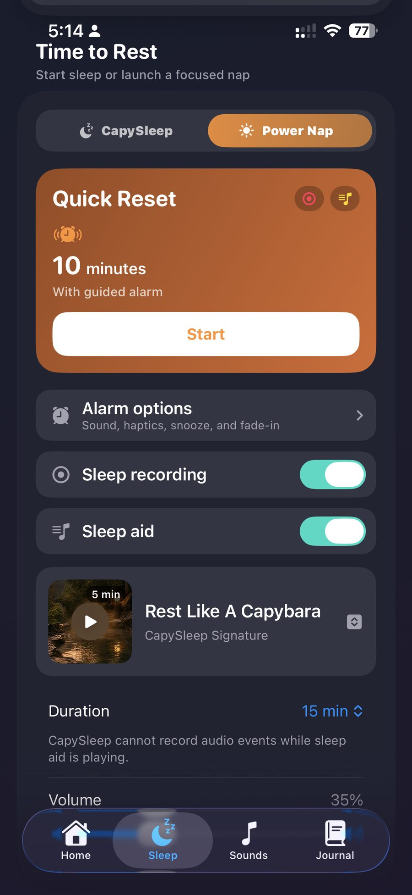
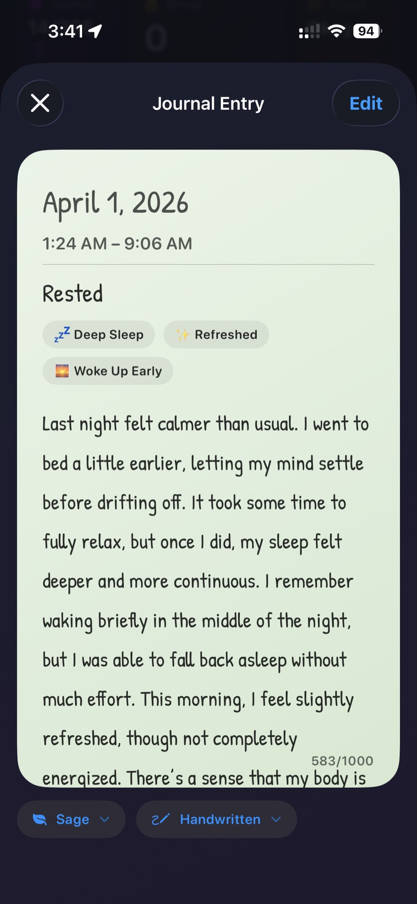
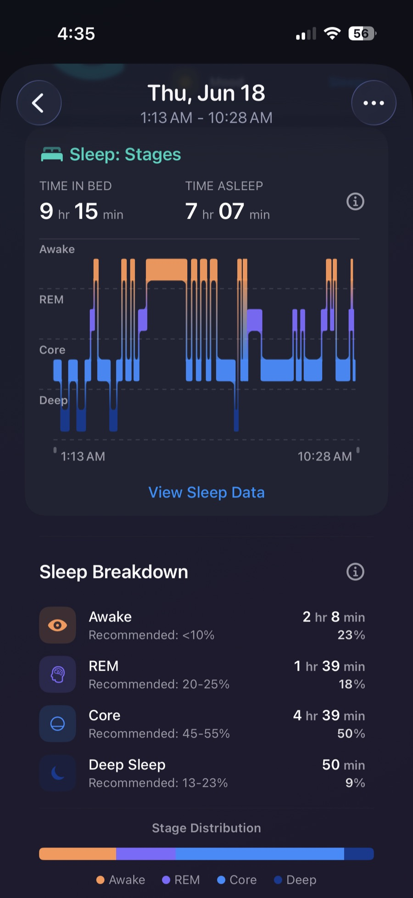
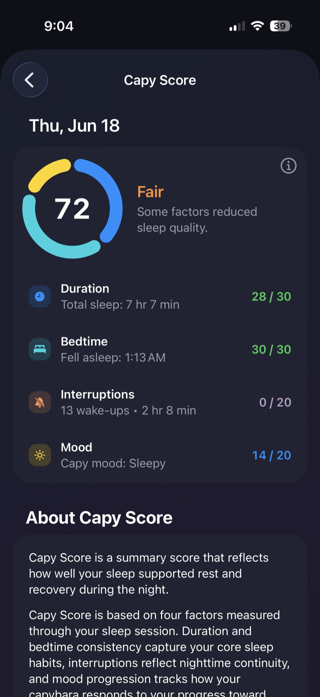
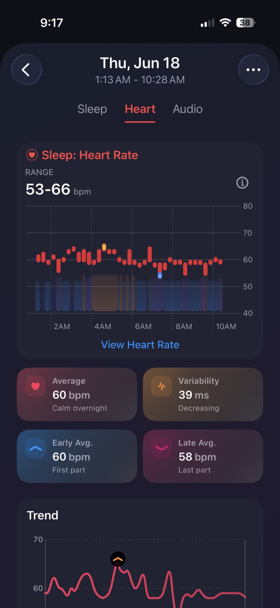
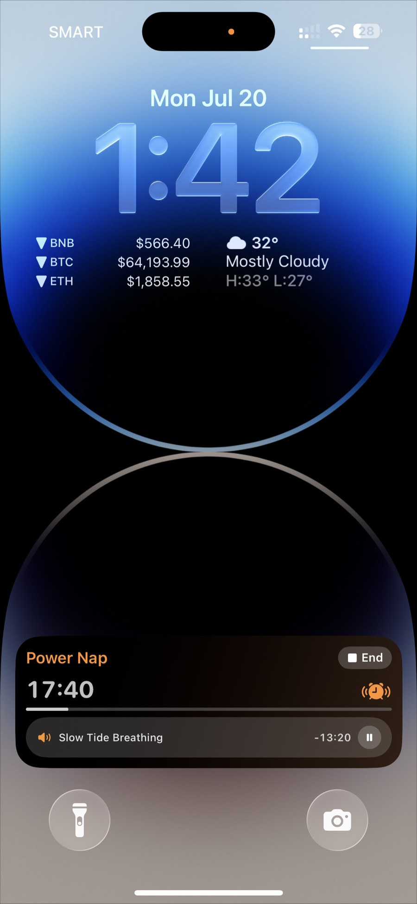
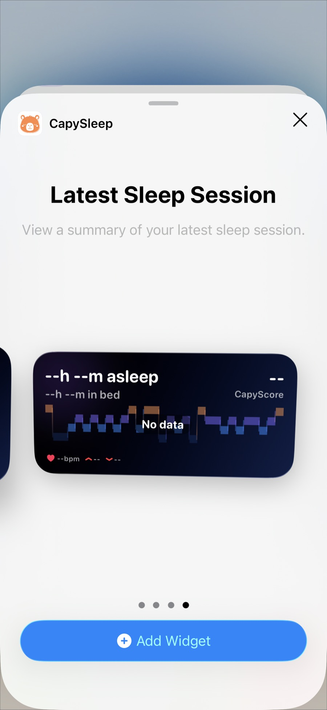

iOS sleep companion
Understand your nights
CapySleep is a calmer way to see Apple Health nights, optional on-device sleep and naps, and a capybara that reflects how you slept — with no CapySleep account.
Free to download. Estimates based on leading studies.

- On your iPhone Motion and audio estimates stay on-device. Optional private iCloud.
- No account No CapySleep sign-in and no developer-operated server.
- Health + manual nights Apple Health sleep, overnight sessions, and naps in one place.
- Companion, not a clinic Your capybara reflects how you slept. Capy Score is a wellness summary.
The app
Nights, naps, sounds, and a journal
Start overnight sleep or a power nap from the app. Optional on-device motion estimates while your phone is on the mattress, plus an optional microphone for nighttime sound events. Wind down with sleep-aid sounds, then write how you felt.



Insights
See how the night unfolded
Review hypnograms, stage breakdowns, and Capy Score — a wellness summary, not a clinical score. Related heart rate, HRV, and blood oxygen can appear when you allow Apple Health.



Always nearby
Widgets and Live Activities
Keep an active sleep or power nap session on Lock Screen and Home Screen, then open a summary of the latest night.


On-device first
Your nights stay on your iPhone
CapySleep has no account and no developer-operated backend. Data stays on your device by default. iCloud sync is opt-in and uses your private CloudKit container. Apple Health samples are not included in that sync.
We do not sell personal or health data, and we do not use it for advertising or cross-app tracking.
CapySleep Pro
Keep the library and history going
Free includes 3 sleep-aid sounds, 3 journal entries, and 3 saved sleep or nap sessions, plus basic sleep views. Pro unlocks the full sound library, Apple Music tracks, full Sleep Detail, unlimited history and journal entries, and recurring schedules.
Pro is an optional annual subscription billed by Apple. The price shown in the app is for your region. Deleting the app does not cancel the plan.
Sleep with a calmer companion
Get CapySleep on iPhone. Name your capybara, grant only the permissions you want, and start from Apple Health or a manual night.
Download on the App StoreCapySleep works with the Apple Health app on iPhone. When you allow access, sleep you already track can appear next to optional on-device nights and naps. The Health app keeps that information in one view, encrypted and protected with the passcode on your iPhone.